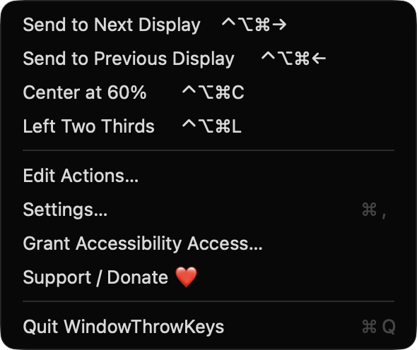
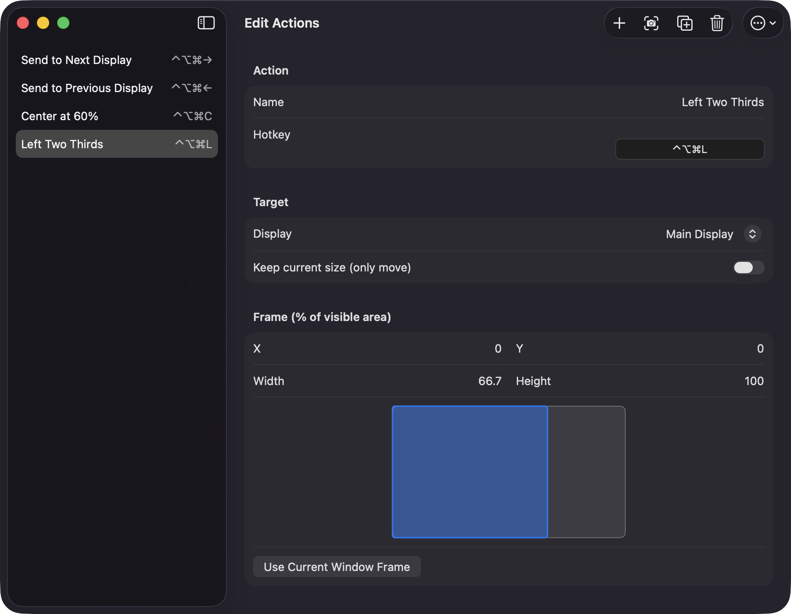
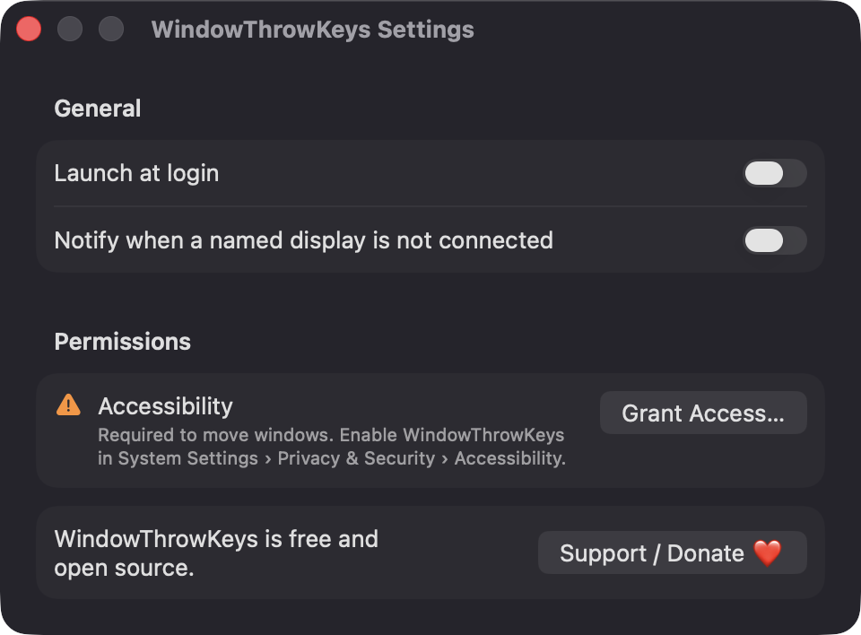

Your own global hotkeys
Each action has a name and a recorded shortcut. The editor warns you when two actions share a hotkey or when the system or another app already owns it.
Open source · macOS 14+ · Universal binary · Window Management
WindowThrowKeys sends the front window to the display, position and size you choose. Record a global hotkey for each action, or click it in the menu bar.
Free & MIT licensed · Apple Silicon & Intel · Latest release

Features
Define each throw once, then trigger it from anywhere with a shortcut.
Each action has a name and a recorded shortcut. The editor warns you when two actions share a hotkey or when the system or another app already owns it.
Target the main display, step through displays left to right with wrap-around, or pick one by name. If a named display is unplugged, the action falls back to the main display.
Set X, Y, width and height as percentages of the display's visible area, with a live preview. Frames are clamped so the window never leaves the screen.
Create an action from the front window's current frame, or fill an existing one with Use Current Window Frame. Keep current size moves a window without resizing it.
Begin with Send to Next Display, Send to Previous Display, Center at 60%, and Left Two Thirds. Duplicate, reorder, delete, and import or export all actions as JSON.
The menu lists every action with its shortcut and runs it on the front window when clicked. Launch at login is optional.
Screenshots


Install
WindowThrowKeys is open source and not notarized with a paid Apple Developer ID, so macOS needs one extra step the first time.
xattr -cr /Applications/WindowThrowKeys.app
Download
Free, forever. Built for macOS 14 Sonoma or newer, Apple Silicon and Intel.
Not notarized: on first launch right-click WindowThrowKeys.app → Open.
FAQ
Yes. It is free to use and released under the MIT license, with the full source on GitHub. There is no account, no server and no network code. If it saves you time, you can optionally support development on Ko-fi.
Accessibility is required, because that is how the app finds the front window and sets its position and size. Notifications are requested only if you enable the missing-display alert, and launch at login is optional. It does not ask for Screen Recording or Microphone access, and it only reads window frames, never contents.
Your actions are saved as a JSON file named actions.json in ~/Library/Application Support/WindowThrowKeys on your Mac. Nothing is sent anywhere, and you can export or import the file from the editor.
Notarization requires a paid Apple Developer account, and this is a free project. Right-click the app and choose Open once to get past Gatekeeper, or build it from source with Xcode.
Support ❤️
WindowThrowKeys is a free, open-source alternative to paid utilities. If it earns a spot on your Mac, a coffee keeps the updates coming.
☕ Support Or on Ko-fi